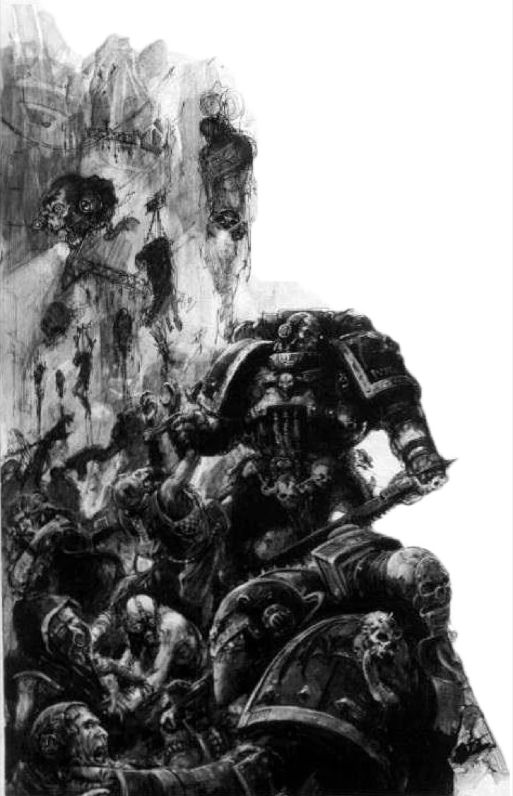
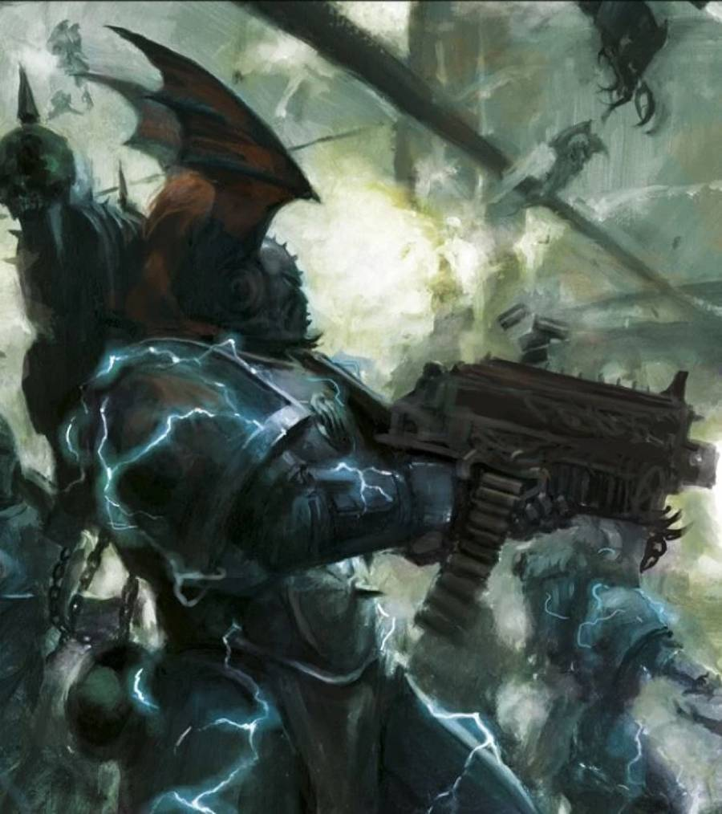

Night Lords
| Night Lords VIII Legion, the Night's Children | |
|---|---|
Badge of the Night Lords | |
| Founding | First Founding, c. 700.M30, in the closing years of the Unification Wars[a] |
| Legion number | VIII |
| Primarch | Konrad Curze, the Night Haunter (slain after the Heresy) |
| Present leader | None; independent warbands under their own lords |
| Homeworld | Nostramo (destroyed 984.M30); first recruits from the prison sinks of Terra |
| Fortress | Tsagualsa, in the Eastern Fringe (formerly); warbands in the Eye of Terror and the Great Rift |
| Allegiance | Loyalist (until 005.M31); Traitor, Chaos Undivided |
| Colours | Midnight blue and black, with gold and red |
| Combat doctrine | Terror, ambush, night raids and the destruction of morale |
| Notable battles | |
| Destruction of Nostramo, Drop Site Massacre, the Thramas Crusade, Siege of Terra, Scound's Fall, the Great Rift raids | |
| Notable members | |
| Konrad Curze, Jago Sevatarion, Gendor Skraivok, Talos Valcoran | |
The Night Lords are the VIII Legion of the Space Marine Legions. They were the Legion of Konrad Curze, the Night Haunter, and their purpose in the Great Crusade was the pacification of worlds by fear. Their first warriors were taken from the prison sinks of Terra and their later ones from the criminal underworld of Nostramo, the primarch's home, and they carried the habits of both into the Emperor's service: judgement without mercy, a belief that cruelty properly applied is a form of kindness, and a doctrine of terror that no other Legion used so freely. In 005.M31 they followed Curze into the rebellion of Horus, and in the Horus Heresy they served as the Warmaster's outriders, running ahead of his armies to break the will of worlds before they were attacked.[1][2]
After the Heresy the Night Lords did not flee into the Eye of Terror like most of the other Traitor Legions. They remained on the Eastern Fringe of the galaxy and went on fighting there, and their primarch, who had foreseen his own death, was killed by an assassin of the Callidus Temple. The Legion then broke into feuding warbands, which are today the Imperium's most common pirates and raiders in the Segmentum Obscurus. Their old habits survive, and the sight of their winged skull is still enough to make a planetary governor pay what he owes.[2][3]
The Great Rift, which opened in 999.M41, has been the best event for the Night Lords in ten thousand years. Half the Imperium is in darkness, cut off from the light of the Astronomican, and its worlds are poorly defended and afraid. The Night Lords have welcomed it. Fortress-monasteries have been raided, astropaths taken and tortured to produce false beacons, and whole worlds turned into monuments to dread.[4]
Legion era
[edit]Children of the dark
[edit]The VIII Legion was among those formed by the Emperor in the closing years of the Unification Wars. Its first recruits came from the prison sinks of Terra, the caverns below the hive-cities in which the condemned were kept in blindness and lawlessness. In them lived, among the killers, children born in the dark. Pale, silent and quick, they were known as the night's children, and it was from them that the Emperor made the first warriors of the Legion. The gene-seed of the Legion suited them. It sharpened their sight in darkness beyond that of other Legions, so that a Night Lord must wear filters in sunlight, and it paled their skin to the colour of ash.[1]
In the Unification Wars the Legion was the Emperor's instrument of retribution against those who had broken his peace by returning to the practices of Old Night. The Saragorn Enclave, which had continued its genetic crimes, the Court of Antius, which bred psykers, and the March of Ten Million were among its targets. The Legion's character was fixed in these campaigns. Its warriors saw the universe in terms of light and dark, guilt and innocence, and held that justice was neither warm nor kind but as cold as a knife.[1]
The Night Haunter
[edit]The Legion's primarch was found on Nostramo, a world of corrupt guilds and syndicates circling a dying star, in whose largest hive-city the infant Konrad Curze had been raised by scavenging. As a youth he had hunted the guilty through the dark streets and killed them, and in the course of decades he had made Nostramo Quintus an orderly and well-lit city by terror. The Emperor came to him in 896.M30, in what the city remembered as the Delegation of Light, and Curze, who had foreseen it, submitted and took command of the Legion. He named it the Night Lords. He studied the doctrines of the Legiones Astartes for a time under the tutelage of Fulgrim, who showed him how the other Legions fought.[1][5]
Curze applied what he had learned on Nostramo to the Crusade. He told his Legion that fear is the surest weapon, and that cruelty used to impose peace is less cruel than endless war. The Night Lords decorated their armour with images meant to terrify, and the rumour of their approach was enough to make a rebel system pay its tithes, close its criminal houses and put its mutants to death. The Emperor used them to pacify planets that other Legions had conquered and then lost, and the Night Lords sometimes issued an Exterminatus on those that did not submit. They became the Imperium's tool of terror, and as the Crusade went on there was a marked and rising number of the skinning pits and crucified cities that they left behind. The Emperor had misgivings, as did several of the primarchs, but there was no action that anyone was willing to take.[1][5]
Nostramo
[edit]
When Curze left Nostramo, the world went back to its old ways, and the youths that it sent to the Legion were no longer its best, but its worst. They were gutter-born, drenched in blood and cruelty, and they poisoned the Legion. Its discipline, which had rested on Curze's own example, wore away, and the contempt in which the other Legions held it deepened. On Listrantia IV the Night Lords refused a surrender because they had come to enact judgement and not to receive supplication. On Cheraut in 984.M30, in a campaign with the Emperor's Children and the Imperial Fists, Curze quarrelled with Rogal Dorn over the slaughter of the defeated, and what passed between them was sealed in the Palace archives. Dorn was found severely wounded and Curze's bodyguard slaughtered.[5]
Curze returned to Nostramo in 984.M30 and destroyed it. His fleet fired lance strikes into the planet's unstable core, and the world tore itself apart. In his journals the primarch wrote that he had seen the planet split by a lance of pure light and that he had acted to prevent its poison from spreading. The Legion, which had by now lost the last of its honour in the Imperium's eyes, was without a home. Few outside the Palace knew what had happened, and the Night Haunter was permitted to remain in the Crusade, under the eye of Horus.[5]
Horus Heresy
[edit]Outriders of rebellion
[edit]Curze had foreseen a single future, a dark path of failure and death, and he told his sons that it was a precipice from which he would step with open eyes. He took no devotion to any god of Chaos. He used the powers of the Warp as tools for his terror. In the first council of the Traitors before the Drop Site Massacre he met the Word Bearers' commanders and the other Traitor primarchs aboard the flagship Fidelitas Lex. At the massacre itself, on Isstvan V in 006.M31, the Night Lords formed part of the second wave that turned on the loyalists, and they ran through the survivors in hunting parties. Curze took the primarch Vulkan alive and held him for months aboard the gaol-hulk Nightfall, killing him again and again, and concluded that his prisoner was a Perpetual whose body would not stay dead.[5][2]
Horus used the Night Lords as outriders, to run ahead of the Traitor host and terrify worlds into submission. The Nostramo Sector, a hundred inhabited systems that supplied the Warmaster's war, was the Legion's to hold, and Curze treated every shortfall in production or misfortune among the conquered as treason, punishing it with death. He tried to cut away the rot in the sector and in the Legion by sending harsher recruits, and found that they came from the same corrupted stock.[5]
The Thramas Crusade
[edit]The Night Lords' fleet went to Tsagualsa in the Eastern Fringe, where an asteroid belt concealed its base, and from there began the Thramas Crusade of 007–009.M31 against the Imperial strongholds of Heroldar and Thramas. The campaign was meant to secure the Warmaster's flank and delay the Dark Angels, and it lasted nearly three years. At a parley on Tsagualsa in 009.M31, Curze tried to persuade Lion El'Jonson to join the Warmaster, and the meeting became a fight. He had his brother by the throat when a Dark Angel guardsman ran a sword through his back. The Lion ambushed the Night Lords' fleet and destroyed about a quarter of it, and the mortally wounded primarch led a boarding action on the flagship Invincible Reason, and fled through its decks for months before the survivors escaped.[5]
Macragge and Terra
[edit]The Night Haunter was later captured on Macragge, in c. 009–010.M31,[a] in the realm that Guilliman had founded as Imperium Secundus, and his Mantle and claws were taken. His prison sarcophagus was cast into space by Sanguinius and the Lion, and the Night Lords recovered it. At Tsagualsa they made him new arms and armour, crude copies of those that he had lost.[5]
The Night Lords did take part in the Siege of Terra in 014.M31, under captains who had to act without their primarch. One of them, Gendor Skraivok, with the ship's mortal captain, Lotara Sarrin, and the World Eaters' Khârn, helped to lure Angron into a maze that Perturabo had built aboard the Nightfall, so that the Daemon Primarch's rage could be held until the Traitors' rituals had loosened Terra's defences. The Legion then retreated from Terra with the rest of the Traitors.[2][5]
The Long War
[edit]The death of the Night Haunter
[edit]After the Warmaster fell, the Night Lords did not break and flee into the Eye of Terror like the other Traitor Legions. They went on attacking the Imperium and set up their own dominion in the worlds of the Eastern Fringe. Their tactics changed, and betrayed a self-destructive desperation. Their primarch was losing his reason, and in his last days he gave way to fits of violence, incoherence and sadism, and his closest officers, among them Jago Sevatarion, the Legion's First Captain, were dismayed at what he had become.[5][3]
At a last gathering of the Legion, the Night Haunter told his sons that their way was not the way of the Imperium, and that they would never wear the Imperial eagle. They would stand in midnight, he said, their claws red with the lifeblood of his father's failed empire, warring through the centuries as the talons of a murdered god. The Emperor, who wished to be rid of the Legion, sent half of the Callidus Temple of Assassins to kill him, and one of them, M'Shen, was allowed in c. 015.M31[a] to enter the Legion's lair on Tsagualsa and reach the primarch. The assassin's vid-log records his last words: that he had known the assassin was coming, that he had not had him killed because the act that he was about to commit proved the truth of all he had ever done, and that death was nothing compared to vindication. The log cuts out. The Night Lords, who bore the body away, recorded the death as one that their primarch permitted.[5][2]
Earlier Imperial summaries recorded it only as the work of an Imperial assassin, and some placed it at the end of the Heresy without naming the world. The detailed account is now accepted on the evidence of the vid-log and the testimony of surviving Night Lords.
The warbands
[edit]With no primarch to hold them, the Legion splintered into feuding warbands, and in time moved into the Eye of Terror. Its numbers and capacity fell in the course of ten thousand years, and its leaders contend for the right to lead the whole. The Night Lords found a new way to live, as mercenaries and elite shock troops for other Chaos forces and for pirates such as the Red Corsairs' Huron Blackheart, and they took part in several of the Black Crusades of Abaddon when it suited them. Their most infamous raid within the Imperium was against Scound's Fall, within a few hundred light-years of Terra. Nearly all the Raptors serving Chaos, the jump-pack assault troops who drop out of the dark upon their prey, trace their origin to the Legion.[3]
The Legion as a whole worships none of the gods of Chaos. It venerates Chaos Undivided as an idea and holds the individual powers in contempt, as the Night Haunter did, and it uses daemons rarely, with the exception of the Furies that share its taste for murder. Some warbands have nevertheless been touched by the Warp. Talos Valcoran, an apothecary and the leader of the Soul Hunters, gathers and sacrifices the dying and claims prophecy from their last moments, and is regarded by Inquisitors as a typical product of the Legion's long isolation.[3]
Era Indomitus
[edit]
The Night Lords took the opening of the Great Rift in 999.M41, at the dawn of the Era Indomitus with pleasure. Half the Imperium, the Imperium Nihilus, lay in darkness beyond the Astronomican's light, and the other half, the Imperium Sanctus, was in confusion. The warbands, which had lived on piracy to replace their wargear and their numbers, prospered as never before. Worlds of the Departmento Munitorum were stripped bare by nightclad warriors, and several Space Marine fortress-monasteries were raided, their gene-seed taken and their armouries emptied.[4]
The Legion's sorcerers found a new use for the fear of the age. Thousands of astropaths were taken and tortured, and the combined trauma of their minds was used to make siren signals that diverted or lured stranded Imperial ships into the Legion's hands. The Night Lords practise this on a large scale. Entire worlds have been made into monuments to pain, and a Rift-warband that seizes one will sometimes hold it for years as a hunting ground, to be fed on again and again. The Inquisition's analysts believe that the Night Lords, who have no loyalty to any power and no plan other than the Imperium's fear, are among the hardest of the Traitors to forecast, and that their raids are best understood as expressions of a belief that the light is a lie.[4]
Organisation
[edit]The Legion was organised like the others into companies, and its squads are called claws. Each company was led by a captain and consisted of squads of ten called claws, under a sergeant. The Legion's elite were the Atramentar, the Terminator-armoured veterans of the 1st Company under First Captain Jago Sevatarion, and the primarch's most trusted advisers were the Kyroptera, seven chosen captains who stood outside the ordinary chain of command and acted as the soul of the Legion. The Legion's Raptors, who use jump packs, and its Terror Squads, who specialise in ambush and the breaking of morale, are its characteristic troops.[1][3]
The warbands that survive have no standard order of battle. Each is led by a lord, usually a veteran of the Legion's old companies, and consists of a core of Chaos Space Marines and a body of renegade troops. Most warbands keep a fleet of raiding vessels, often old, which they use to cut an area's trade, take its captives and break its morale before an attack. A Night Lords force is commonly short of wargear, and mismatched plate taken from the dead is remade in the Legion's colours.[3]
| Name | Role |
|---|---|
| Claw | The Legion's squad, led by a sergeant |
| Kyroptera | Seven captains who advised the primarch outside the normal command structure |
| Atramentar | Terminator-armoured veterans of the 1st Company |
| Raptor | Jump-pack assault trooper; the Legion's shock troops |
| Terror Squad | Specialists in ambush and in the breaking of morale |
| Warband lord | The leader of one of the independent bands of the post-Heresy Legion |
Beliefs and combat doctrine
[edit]The Legion believed, before the Heresy, in the use of fear as the means to an end. Curze taught that it was better to be feared than respected, because fear was a truth of the soul and respect an illusion of the mind. A world that expected the Night Lords paid its dues and obeyed, and the Legion, which killed those who did not, thereby killed fewer than a Legion that fought. In this belief the Night Lords saw themselves as the Emperor's lesser evil.[5]
After the Heresy the belief hardened into nihilism. The Legion holds that the Imperium's sins have been proved by the Legion's existence and that its own cruelty is a form of honesty. Its method is the night raid. It attacks at the end of a long campaign of dread: the flayed bodies left as warnings, the strikes at the supply lines, the vox broadcasts of the screams of captives. In battle it prefers ambush and the sudden descent of Raptors from the dark to a pitched battle, and its warriors, who see in the dark, are more at home at night than any other force of Space Marines.[3]
Gene-seed
[edit]The Night Lords' gene-seed is the least mutated of the Traitor Legions, a fact that the Inquisition attributes either to its stability or to the Legion's refusal to bind itself to any one power. Its warriors have pale skin and jet-black eyes, see in complete darkness more clearly than other Astartes, perceive heat, and can emit a shriek that deafens and disorients those who hear it. The real inheritance of the primarch is psychological, a tendency to paranoia and self-destruction, and the Legion's sorcerers are said to suffer seizures in which they see the future. They, like Curze, appear to see only its darkest path.[6][3]
Heraldry
[edit]The Legion's badge is a bleached skull with red bat-like wings, which in the later rolls is set over a black star of Chaos. Its armour is midnight blue, across which, in combat, a network of lightning is said to play. The Legion decorates its plate with the imagery of death: fanged skulls, bat-like wings and red eyes, and human bones taken from its most terrified victims, which its warriors believe radiate their last moments as an aura of fear.[7]
Notable members
[edit]| Name | Era | Notes |
|---|---|---|
| Konrad Curze | Legion | Primarch; the Night Haunter |
| Jago Sevatarion | Legion | First Captain; known as Sevatar |
| Gendor Skraivok | Legion | Captain at the Siege of Terra |
| Talos Valcoran | M41 | Apothecary; the leader of a Soul Hunters warband |
Timeline
[edit]| Date | Event |
|---|---|
| c. 700.M30 | The VIII Legion is raised from the prison sinks of Terra in the First Founding.[a] |
| c. 700–712.M30 | Campaigns of retribution in the Unification Wars: the Saragorn Enclave and the Court of Antius.[a] |
| 798.M30 | The Great Crusade begins. |
| 896.M30 | The Delegation of Light: Konrad Curze is found on Nostramo and names the Legion the Night Lords. |
| 984.M30 | Cheraut campaign and the quarrel with Rogal Dorn; Curze destroys Nostramo. |
| 006.M31 | The Drop Site Massacre at Isstvan V; Vulkan taken captive. |
| 007–009.M31 | The Thramas Crusade against the Dark Angels. |
| 009.M31 | The parley and ambush at Tsagualsa. |
| c. 009–010.M31 | Curze captured on Macragge in the Imperium Secundus and set adrift.[a] |
| 014.M31 | The Siege of Terra; the Legion withdraws with the other Traitors. |
| c. 015.M31 | The Night Lords' dominion in the Eastern Fringe; Curze killed on Tsagualsa by the Callidus assassin M'Shen.[a] |
| M31–M41 | The Legion splinters into warbands and enters the Eye of Terror. |
| 999.M41 | The Great Rift opens; the warbands raid the Imperium Nihilus. |
See also
[edit]Notes
[edit]References
[edit]- ^ a b c d e f Liber Primarchus (M32, revised M41). Administratum Archive, Terra.
- ^ a b c d e Chronicles of the Heresy (sealed). Logos Historica Verita, Terra.
- ^ a b c d e f g h Lexicanum Martialis. Officio Militaris.
- ^ a b c Records of the Indomitus Crusade (ongoing). Office of the Lord Commander.
- ^ a b c d e f g h i j k l The Dark: journals of the Night Haunter (c. M31, heretical, Inquisitorial copy). Ordo Hereticus.
- ^ Codex Imperialis (rev. 980.M41). Adeptus Terra.
- ^ Insignium Astartes (rev. M41). Ordo Astartes, Terra.